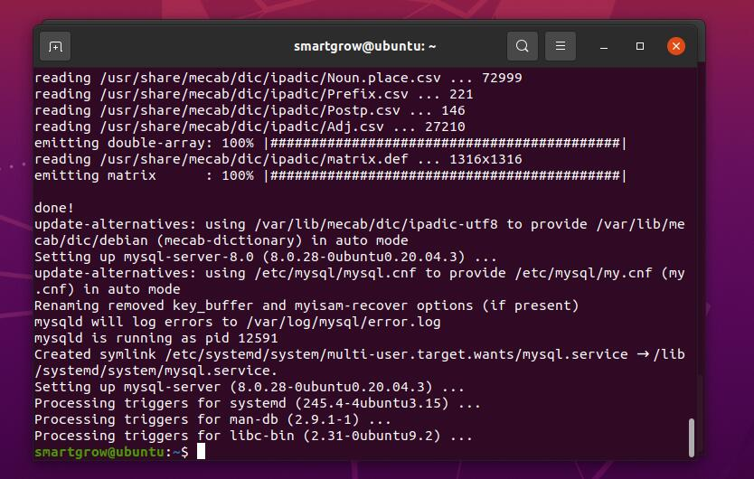

step1.安装mysql-server
执行如下命令：sudo apt-get install mysql-server。并输入密码，出现询问框输入Y。如图：
等待一段时间后，出现下图这代表安装成功。
step2.进入mysql
执行如下命令：sudo mysql -u root。如图：
出现Welcome字样则代表操作成功。
step3.创建用户
执行如下命令：CREATE USER 'smartlux'@'%' IDENTIFIED WITH mysql_native_password BY 'App_Home2016';。如图：
执行如下命令：GRANT ALL PRIVILEGES ON *.* TO 'smartlux'@'%' WITH GRANT OPTION;。如图：
执行如下命令：FLUSH PRIVILEGES;。如图：
step4.退出mysql
执行如下命令：exit。如图：
step5.设置远程访问mysql
执行如下命令：sudo gedit /etc/mysql/mysql.conf.d/mysqld.cnf并输入密码。如图：
弹出的文件框如图所示：
将 bind-address 修改值为 0.0.0.0。然后保存退出。如图所示：
step6.重启mysql
执行如下命令：sudo /etc/init.d/mysql restart。如图：